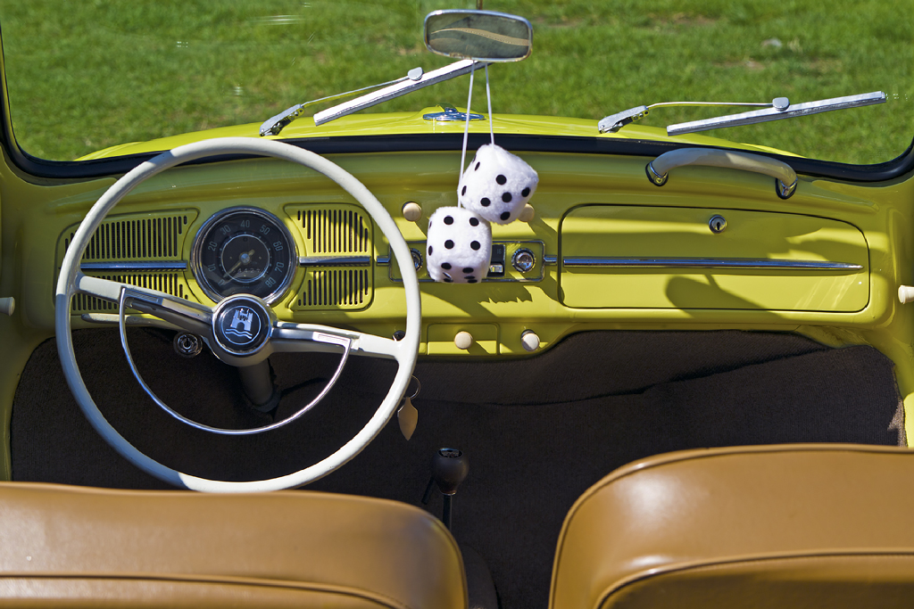

Kevés autó mondhatja el magáról, hogy annyira beleivódott a globális köztudatba, mint a Volkswagen Bogár. Az eredetileg "KdF-Wagen" (Kraft durch Freude-Wagen – Erő Öröm által autó) néven futó járművet Ferdinand Porsche tervezte a '30-as években, azzal a céllal, hogy egy megbízható és megfizethető autót biztosítson a német lakosságnak. Ami azonban köztudott: a Bogár sokkal többet ért el, mint csupán a népautó státuszát; kulturális jelenséggé, a tartósság és az egyszerűség szimbólumává vált.
A Történet Kezdetei és a Háború Után
A Bogár tervezése a harmincas években kezdődött, de a tömegtermelés a második világháború után indult be igazán, a brit hadsereg felügyelete alatt, Ivan Hirst vezetésével. Hirst látnok volt, és felismerte az autóban rejlő potenciált, még akkor is, ha sokak számára akkoriban furcsának és elavultnak tűnt. A háború utáni Németország újjáépítésének szimbólumává vált, és hamarosan exporttermékké lépett elő.
A Bogár gyártósora, ami több mint 21 millió darabot ontott magából
Az autó a hátsó motoros, léghűtéses elrendezésével, a jellegzetes kerek formájával és a rendkívüli megbízhatóságával vált ismertté. Egyszerű, mégis robusztus felépítése miatt könnyen javítható volt, ami különösen népszerűvé tette a fejlődő országokban és a "csináld magad" kultúra hívei körében.
Kulturális Ikon és Globális Siker
Az 1960-as években a Bogár hatalmas népszerűségre tett szert az Egyesült Államokban is, különösen a hippi mozgalom és a fiatalok körében, akik az autó szimbolizálta szabadságot és nonkonformitást értékelték. Hirdetési kampányai, mint a legendás "Think Small" (Gondolkozz kicsiben), forradalmasították az autóreklámot, és az autó imázsát még inkább megerősítették.
A Bogár egyszerű, funkcionális belső tere
A Bogár szerepelt a Disney "Kicsi kocsi" filmsorozatában (Herbie) is, ami tovább növelte népszerűségét a családok körében. 2003-ban, 65 év gyártás után, a Volkswagen Bogár utolsó példánya legurult a mexikói Puebla-i gyár futószalagjáról, összesen több mint 21,5 millió legyártott darabbal, ezzel túlszárnyalva a Ford T-modelljét a legtöbbet gyártott egyetlen modell címért.
Az Örökség ma
Bár a gyártás leállt, a Volkswagen Bogár öröksége tovább él. A klasszikus autórajongók ma is nagy becsben tartják, és sokan büszkén restaurálják és vezetgetik ezeket a kis legendákat. Az autó emlékeztet minket arra, hogy a formatervezés, a funkcionalitás és az egyszerűség néha sokkal időtállóbb lehet, mint a legcsillogóbb technológiai újítások. A Bogár nem csupán egy autó volt, hanem egy mozgalom, ami a mobilitást mindenki számára elérhetővé tette, és ezzel örökre beírta magát az autótörténelembe.
Alapvető adatok
| Jellemző | Adat |
|---|---|
| Gyártási évek (eredeti) | 1938 – 2003 (összesen, különböző országokban) |
| Gyártó | Volkswagen |
| Kategória | Kompakt autó, Népautó |
| Motor (kezdeti) | 1.1 L (67 cu in) léghűtéses boxer (4 hengeres) |
| Motor (későbbi) | 1.2 L, 1.3 L, 1.5 L, 1.6 L léghűtéses boxer (4 hengeres) |
| Teljesítmény (kezdeti) | ~25 LE (18 kW) (1.1L) |
| Teljesítmény (későbbi) | ~30-50 LE (22-37 kW) (változattól függően) |
| Végsebesség (kezdeti) | ~100 km/h (62 mph) |
| Végsebesség (későbbi) | ~120-130 km/h (75-81 mph) |
| Karosszéria változatok | 2-ajtós Szalon, 2-ajtós Kabrió, 3-ajtós Kastenwagen |
| Hosszúság | ~4079 mm (160.6 in) |
| Szélesség | ~1539 mm (60.6 in) |
| Magasság | ~1500 mm (59.1 in) |
| Súly | ~730-820 kg (1600-1800 lbs) |
| Jellegzetességek | Hátsó motoros, léghűtéses, ikonikus kerek forma, megbízhatóság |